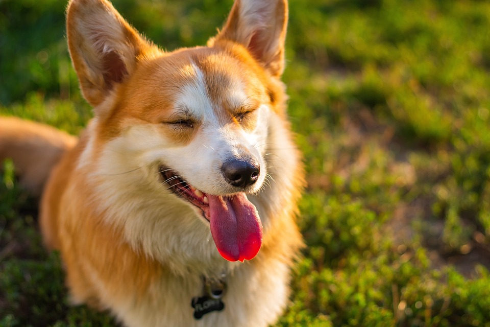
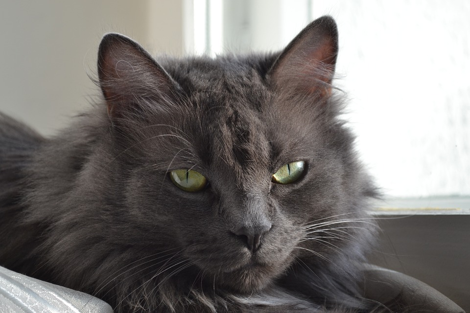

Animais são importantes no nosso dia a dia, são nossos companheiros

Cachorro da raça Corgi, uma raça super protetora apesar de seu pequeno tamanho Gatos são conhecidos por serem ingratos, mas são extremamentes carinhosos

Gatos são ariscos não confunda com ingratidão